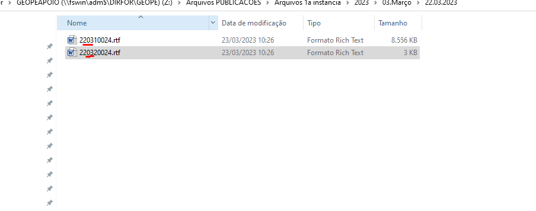
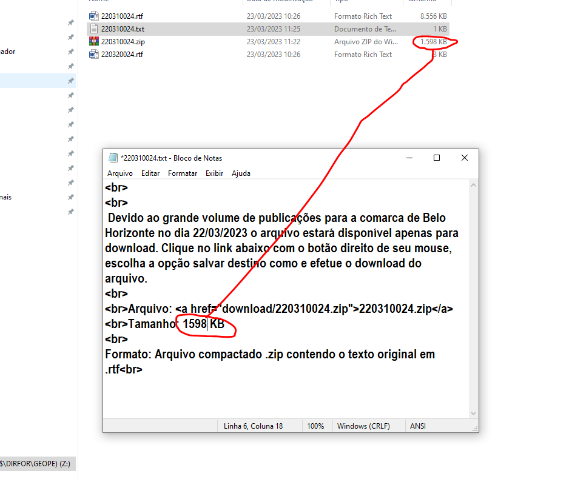
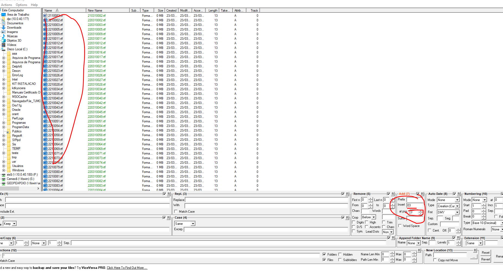

Manual HTML (RTF)
Pré-requisito: Este procedimento só pode ser realizado após a conclusão do processo da Primeira Instância.
1. Backup e Preparação dos Arquivos
- Acesse a pasta:
\\10.0.40.177\dje\RTF. - Confira se existem no mínimo 298 arquivos "P".
- Copie **todos** os arquivos para a pasta de backup do dia, por exemplo:
\\10.0.40.177\dje\_Backup_RTF\2023\03.Março\22.03.2023 - Selecione todos os arquivos "P" (exceto arquivos "PUB") e copie-os para a pasta TEMP.
2. Processamento de Belo Horizonte (024)
- Na pasta TEMP, recorte o arquivo de BH (
024) e qualquer outro de BH de expedientes anteriores. - Cole os arquivos na pasta do dia correspondente, por exemplo:
Z:\Arquivos PUBLICACOES\Arquivos 1a instancia\2023\05.Maio\04.05.23 - Extraia o conteúdo dos arquivos ZIP e, em seguida, apague os arquivos ZIP.
- Abra e feche cada arquivo RTF para verificar se há erros. Após a verificação, coloque o mês depois do dia e compacte-os novamente. 
- Copie o arquivo
.txtda pasta do dia anterior para a pasta atual. - Renomeie o arquivo
.txte o novo.zipcom a data do expediente. - Abra o arquivo
.txte atualize a data e o tamanho do arquivo para corresponder ao novo ZIP.

3. Transferência dos Arquivos de BH via FileZilla
- Conecte-se ao FILEZILLA SITE TJ_Arquivos RTF.
- Copie o arquivo
.zipde BH para a pasta:/web1/www/arquivos/juridico/sf/diario/download - Volte uma pasta para trás e copie o arquivo
.txtpara a pasta do dia do expediente. - Acesse o site para verificar se a publicação de BH já está disponível.
4. Processamento das Demais Comarcas
- Volte para a pasta TEMP.
- Selecione todos os arquivos ZIP e extraia-os usando "Extrair aqui...".
- Apague todos os arquivos ZIP após a extração.
- Selecione todos os arquivos RTF extraídos, clique com o botão direito e use a ferramenta "Bulk Rename Here" para renomeá-los em lote.
- Em Add coloque no INSERT: coloque o mês do expediente. Em At Pos: deixe sempre 3. 
- Copie todos os arquivos RTF renomeados para a pasta
rtfno FileZilla.
5. Execução do Script
- Acesse o servidor SOLWEB-5 (via PuTTY). A senha é
imprensa. - Execute o primeiro comando:
cd /home/publica/rotina - Execute o segundo comando:
./rtf2html.pl –t - No FileZilla, atualize a pasta
rtf(pressionando F5) até que todos os arquivos desapareçam.
Solução de Erros: Se algum arquivo não sumir, execute o comando
./rtf2html.pl –x no SOLWEB-5 para identificar o arquivo problemático. Corrija-o na pasta TEMP (abrindo, dando Enter e Backspace, e salvando), substitua-o no FileZilla e execute novamente os comandos do passo 5.